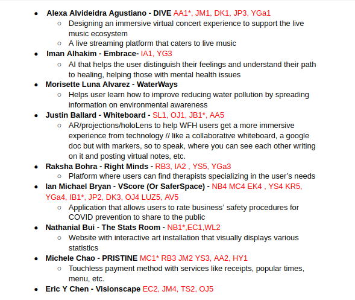
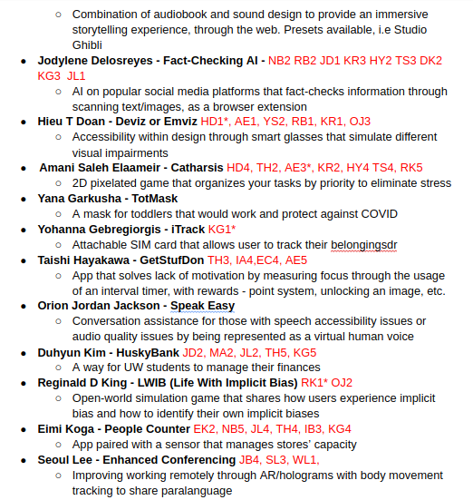

Latest Posts
This is the first post of several to come that highlights some of the major changes made from the beginning of our capstone journey to the present. There's a lot of back story to cover so visual aids have been placed throughout the post to show what was happening at the time. Some portions may have a little less documentation because in the beginning we were moving really, really fast between pivots. We originally started by individually brainstorming ideas to pitch to each other and gave feedback on them during a breakout session. To prepare, each person made a brief presentation of their idea. Once this was complete, a voting session took place with each person ranking - from most (1) to least (5) - their interest level of five ideas. A view of the voting session document from Fall quarter  